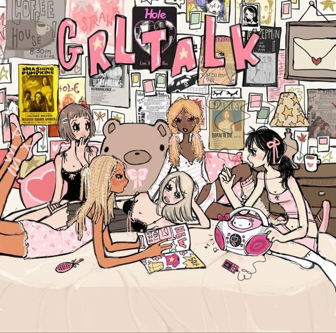
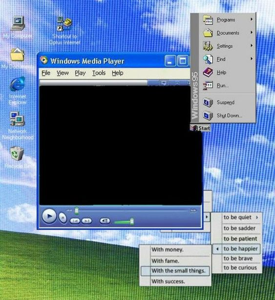

Phase 1: Exploring Digital Media
The Making 1

In this part of the project, I didn't really know a lot about coding, so I was really just focusing on taking stuff out and putting other stuff in. I wasn't super familiar with the style code either.
The Making 2

This second project was a lot easier, I could play more with colors and themes. And this time I understood more about how to tweak the style css. I also liked using my own photos and creating a photo gallery.
The Making 3

For this I was inspired by 2000s interfaces. If I had more time, I'd do something like this, but I also was trying to mimmick the simplicity of html style websites at the time that would lead to more complex.